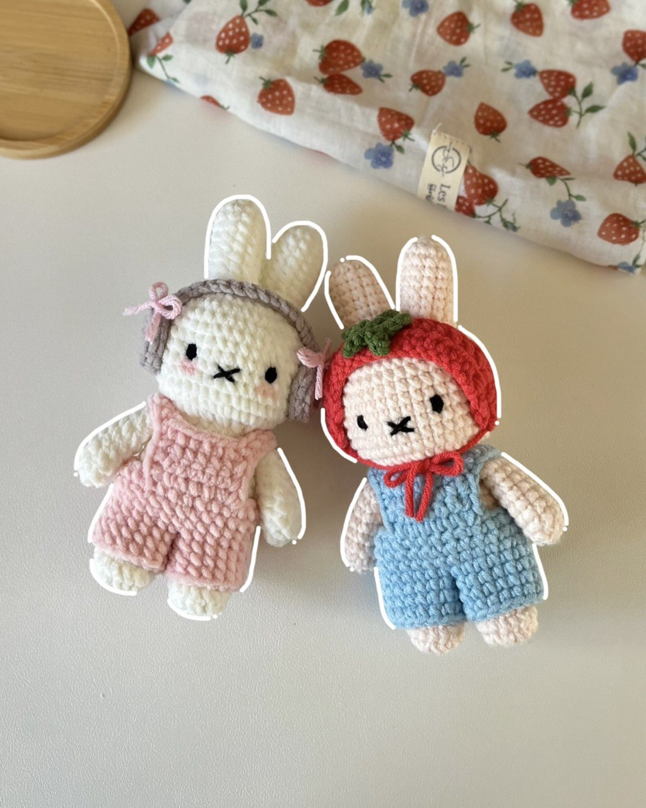

Crochet
I love crocheting!
These are the basic steps of crochet:
They can sometimes be switched around.
- Find pattern (most are found online)
- Amigurumi (3d objects)

- Clothing
- Other items (blanket, bag, etc.)
- Gather supplies (referencing pattern)
- Go for it!
These are some of my favorite sites: